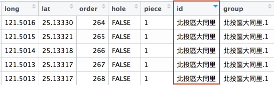
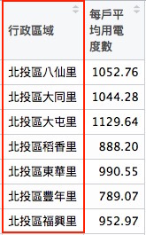
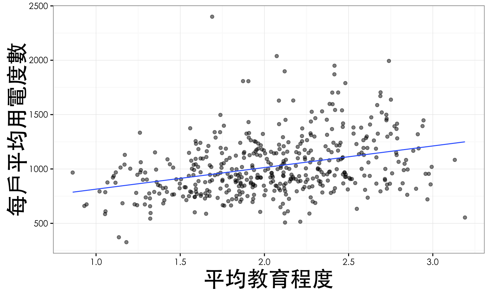

Lin
- 政大統計所碩二
- 健保資料庫
- SQL Server、R
- Whoscall Data Analyst Intern
- User Profiling
- Data Dashboard
2016-06-30
善用網路資源、以及最強大的help()
英國「開放知識基金會」（Open Knowledge Foundation）的最新評比(20151209)，2015年台灣在資料開放指數在全球149個評比國家中名列第一，領先日本、美國德國、法國等先進國家。
Open Data對台灣來說 = 金礦
而擅長於資料分析的我們，職責就是不斷挖掘金礦，創造Open Data的價值。
雖然臺灣 Open Data 排名第一，但還是有許多可以改善的地方：
Open Data進行資料分析前，需要具備整理資料的能力 => 很好的訓練


將以下不同來源的資料按照村里進行串檔(JOIN)：
Note 1: 因為資料的時間涵蓋範圍不同，本研究取2014年進行分析(除所得資料未涵蓋，其他皆有）。
Note 2: 將2012年的各村里綜合所得稅總和資料作為2014年的推估，與其他資料進行串檔。
將人口特性、用電量相似的村里合併
統計方法中常用的分群方法：

分群方法不是這次的課程目標 請報名下次的課程
快速介紹本次所使用的K-means分群方法
若對分群方法有興趣，可以參考Wush大大的神作

| 縣市 | 鄉鎮 | 診所個數 |
|---|---|---|
| 嘉義縣 | 大林鎮 | 11 |
| 台北市 | 中正區 | 70 |
| 台中市 | 北屯區 | 120 |
| 桃園市 | 桃園市 | 3 |
| 苗栗縣 | 公館鄉 | 5 |
| 嘉義縣 | 中埔鄉 | 14 |
我們時常會遇到具有空間資訊(如經緯度)的資料，如：
具有空間性的資料，可以藉由地理視覺化觀察現象。
| Source.airport | Destination.airport | n |
|---|---|---|
| SVX | BKK | 26 |
| XIY | YTY | 12 |
| CDG | TPE | 59 |

Q : 用什麼指標衡量用電量高低？
 + 疊 +
+ 疊 + 
ggmap 套件是用來繪製地圖的R套件，地圖的來源可以由Google、OpenstreetMap等下載。
並且可以結合 ggplot 套件來疊圖
install.packages('ggmap')
get_map : 從 Google Map or Open Street Map(OSM) or .. 取得地圖location : 地圖的中心點, 可以放經緯度 or 地名
zoom： 比例尺, 整數1~21library(ggmap)
map <- get_map(location = c(121.546936,25.069758), zoom = 12, source = 'google', color = 'bw') ggmap(ggmap = map) ## qmap(location=c(121.546936,25.069758), zoom=12, source = 'google', color = 'bw')

rgdal、rgeos、maptools套件install.packages('rgdal')
install.packages('maptools')
install.packages('rgeos')
Large SpatialPolygon DataFrame@叫出來)
Village_NLSC_1050219.dbf (縣市、鄉鎮、村里、及其ID)Village_NLSC_1050219.shp (用來描繪村里界線的資料)?readOGR 查詢一下細節
.xxx)library(rgdal)
library(maptools)
library(ggplot2)
sfn <- readOGR(dsn = '..指定到下載下來檔案的路徑../村里界圖(TWD97經緯度)1050317/',
layer='Village_NLSC_1050219', stringsAsFactors = F)
head(sfn@data) sfn@polygons[[1]]
其實玩OpenData一定會遇到許多奇形怪狀的問題
但不仿化挫折為契機！練習處理資料的能力

如前幾天的課程，如果出現亂碼該怎麼做？ (encoding = ?)
head(sfn@data)
OBJECTID UID PRO_ID COUNTY_ID TOWN_ID VILLAGE_ID V_Name T_Name C_Name 0 8573 7064 64 64 6401000 6401000-013 中興里 旗津區 高雄市 1 8578 3626 10 10007 1000712 1000712-006 頂潭里 田中鎮 彰化縣 2 8579 3627 10 10007 1000712 1000712-007 中潭里 田中鎮 彰化縣 3 8580 3628 10 10007 1000712 1000712-008 龍潭里 田中鎮 彰化縣 4 8581 3642 10 10007 1000712 1000712-022 大社里 田中鎮 彰化縣 5 8582 3737 10 10007 1000717 1000717-013 美雅村 社頭鄉 彰化縣 Substitute 0 中興里 1 頂潭里 2 中潭里 3 龍潭里 4 大社里 5 美雅村
因為專案是針對台北市進行分析，因此我們只需要台北市的村里界線。
C_Name : 為縣市名稱Substitute與V_Name的差別？
sfn@data %>% filter(V_Name != Substitute) %>% headSubstitute為處理此問題後的欄位fortify : 按照行政區域(鄉鎮+村里欄位)將Large SpatialPolygon DataFrame轉換成繪圖的格式## 因為同一個縣市中會有相同名字的村里，為了避免Join出問題，建議加入鄉鎮名 sfn@data <- sfn@data %>% mutate(行政區域 = paste0(T_Name,Substitute)) tp.v <- sfn[sfn$C_Name == '臺北市',] %>% fortify(region = '行政區域')
head(tp.v)
windows版本不用更改fileEncoding
# 別忘了先檢查以下流程喔！ setwd() getwd() head() tail() str() ...
## Mac版本
data <- read.csv('data/20160426_data.csv',fileEncoding = 'big-5')
tp.data <- data %>% filter(縣市 == '臺北市',統計年月 == '10407')
head(tp.data)
統計年月 縣市 行政區域 售電量度數 教育程度總計 大學以上比例 1 10407 臺北市 北投區八仙里 2220263 4988 0.0910 2 10407 臺北市 北投區大同里 2469722 5492 0.0954 3 10407 臺北市 北投區大屯里 483488 1105 0.0588 4 10407 臺北市 北投區稻香里 1804821 4719 0.0799 5 10407 臺北市 北投區東華里 1586857 4005 0.1134 6 10407 臺北市 北投區豐年里 1359574 4097 0.0588 大學比例 大學以下比例 納稅單位 綜合所得總額 綜合所得中位數 綜合所得IQR 1 0.3031 0.6059 1768 1860333 647 874 2 0.2930 0.6116 1934 2110861 649 919 3 0.2045 0.7367 346 498508 570 726 4 0.2823 0.6378 1579 1461138 629 756 5 0.3144 0.5723 1455 1568597 688 934 6 0.2670 0.6742 1399 1152844 604 724 戶數 總人數 女性比例 男性比例 少年人口比例 青年人口比例 壯年人口比例 1 2109 5722 0.5108 0.4892 0.2008 0.3041 0.3827 2 2365 6283 0.5055 0.4943 0.2037 0.3002 0.3794 3 428 1256 0.4697 0.5303 0.1839 0.2914 0.3726 4 2032 5284 0.4970 0.5030 0.1781 0.3155 0.3847 5 1602 4680 0.5303 0.4697 0.2182 0.2795 0.3808 6 1723 4936 0.5142 0.4858 0.2297 0.3160 0.3381 老年人口比例 出生數 出生數.男 出生數.女 結婚對數 離婚對數 設有戶籍宅數 1 0.1124 10 7 3 2 2 1519 2 0.1168 13 4 9 3 1 1784 3 0.1529 3 3 0 1 1 287 4 0.1219 7 2 5 4 3 1623 5 0.1216 7 2 5 3 2 1171 6 0.1163 9 4 5 4 1 1180 設有戶籍宅數之平均人口數 單身或頂客家庭 核心家庭 折衷或大家庭 總戶長數 1 3.77 610 463 446 2112 2 3.53 736 565 483 2375 3 4.38 123 67 97 429 4 3.26 726 543 354 2043 5 4.01 376 421 374 1604 6 4.18 369 368 443 1712 戶長平均年齡 少年戶長數 青年戶長數 壯年戶長數 老年戶長數 1 54.05 33 581 1065 433 2 54.25 52 636 1174 513 3 58.14 5 74 218 132 4 54.19 37 604 952 450 5 55.71 18 394 832 360 6 53.64 25 554 747 386 每戶平均老年人口數 獨居老人宅數 一名老年人口宅數 二名以上老年人口宅數 1 0.32 95 73 22 2 0.32 124 99 25 3 0.47 38 30 8 4 0.33 106 89 17 5 0.36 68 44 24 6 0.35 59 40 19 有偶人數 離婚人數 未婚人數 便利商店數 每戶平均用電度數 每人平均用電度數 1 1329 249 333 0 1052.76 388.02 2 1477 258 404 0 1044.28 393.08 3 280 46 55 0 1129.64 384.94 4 1233 220 357 0 888.20 341.56 5 1099 160 170 0 990.55 339.07 6 1094 200 229 1 789.07 275.44
tp.data 為取出符合臺北市、104年07月的資料(包含8月，雙月記錄)。
請試著確認:
台北市用電量資料(tp.data)與台北市村里界線的村里欄位是否一致？
也就是說，要檢查：
tp.data與tp.v的村里的名稱要相同糖[部]里 ≠ 電力資料的糖部里## tp.v的村里名稱是否都有出現在tp.data中？ 若有，把位置記錄下來 posi <- which(! tp.v$id %in% tp.data$行政區域) tp.v[posi,] %>% head(1)
long lat order hole piece id group 32303 121.4993 25.03528 32303 FALSE 1 萬華區糖[部]里 萬華區糖[部]里.1
## tp.data的村里名稱是否都有出現在tp.v中？ 若有，把位置記錄下來 posi <- which(! tp.data$行政區域 %in% tp.v$id) tp.data[posi,'行政區域']
[1] 萬華區糖部里 456 Levels: 北投區八仙里 北投區大同里 北投區大屯里 ... 中正區忠勤里
## 發現除了糖部里，其他皆一致！ tp.v$id[tp.v$id == '萬華區糖[部]里'] <- '萬華區糖部里' ## 在確任一次有沒有不一樣 which(! tp.v$id %in% tp.data$行政區域)
integer(0)
which(! tp.data$行政區域 %in% tp.v$id)
integer(0)
村里欄位。僅挑選：(1)村里、(2)電力欄位 與村里界線資料合併即可
 + JOIN + 
## 電力資料 power_data <- tp.data %>% select(行政區域,每戶平均用電度數)
## 村里資料 tp.v
power_map <- tp.v %>% merge(y = power_data, by.x = 'id', by.y = '行政區域') power_map %>% head
id long lat order hole piece group 1 北投區八仙里 121.5030 25.12405 1 FALSE 1 北投區八仙里.1 2 北投區八仙里 121.5030 25.12391 2 FALSE 1 北投區八仙里.1 3 北投區八仙里 121.5030 25.12351 3 FALSE 1 北投區八仙里.1 4 北投區八仙里 121.5030 25.12323 4 FALSE 1 北投區八仙里.1 5 北投區八仙里 121.5030 25.12294 5 FALSE 1 北投區八仙里.1 6 北投區八仙里 121.5029 25.12271 6 FALSE 1 北投區八仙里.1 每戶平均用電度數 1 1052.76 2 1052.76 3 1052.76 4 1052.76 5 1052.76 6 1052.76
用力哭泣！！！ T … T
geom_polygon 會將相同group的long、lat 按照order連接起來fill : polygon的連接起來內部的顏色的深淺，會依照fill的大小來調整scale_fill_gradient : fill顏色的相關設定
bg <- get_map(location = c(121.546936,25.069758), zoom = 12, maptype = "toner")
ggmap(bg, extent = "device") +
geom_polygon(data = power_map, aes(x = long, y = lat, group = group, fill = 每戶平均用電度數),
colour = "black", size = 0.5) +
scale_fill_gradient(low = "#FFFFB2", high = "#B10026",
limits = c(300, 2500)) +
theme_bw(base_family = 'STHeiti') +
theme(axis.text = element_blank(), ## 移除經緯度
axis.ticks = element_blank())

bg <- get_map(location = c(121.5377993,25.0291208), zoom = 13, maptype = "toner")
ggmap(bg, extent = "device") +
geom_polygon(data = power_map %>% filter(substr(id,1,3)=='大安區'),
aes(x = long, y = lat, group = group, fill = 每戶平均用電度數),
colour = "black", size = 0.5) +
scale_fill_gradient(low = "#FFFFB2", high = "#B10026",
limits = c(300, 2500)) +
theme_bw(base_family = 'STHeiti') +
theme(axis.text = element_blank(), ## 移除經緯度
axis.ticks = element_blank())+
labs(x = '', y = '') ## 移除X跟Y的title

help(..)套件安裝：
install.packages("highcharter")

感受Highchart繪圖方式：
highchart : 建立一個Hihghchart, ?highcharthc_title : 增加titlehc_add_series : 通常擺放資料, ?hc_add_serieshc_xAxis : X軸設定## 試著漸層式執行以下程式碼
hc <- highchart()
hc
hc <- hc_title(hc, text = "A nice chart")
hc
hc <- hc_add_series(hc, data = c(7.0, 6.9, 9.5, 14.5, 18.2, 21.5, 25.2,
26.5, 23.3, 18.3, 13.9, 9.6))
hc
%>% 進行改寫，一鼓作氣到底This is a subtitleX軸命名為X Axis、 Y軸命名為Y Axis。help(hc_xAxis)c(6.9, 9.5, 14.5, 18.2, 21.5, 25.2, 26.5, 23.3, 18.3, 13.9, 9.6, 7.0)highchart() %>%
hc_title(text = 'A nice chart') %>%
hc_subtitle(text = 'This is a subtitle') %>%
hc_xAxis(title = list(text = 'X Axis')) %>%
hc_yAxis(title = list(text = 'Y Axis')) %>%
hc_add_series(data = c(7.0, 6.9, 9.5, 14.5, 18.2, 21.5, 25.2,
26.5, 23.3, 18.3, 13.9, 9.6)) %>%
hc_add_series(data = c(6.9, 9.5, 14.5, 18.2, 21.5, 25.2,
26.5, 23.3, 18.3, 13.9, 9.6,7.0 ))
運用Highchart描述各群輪廓
## 別忘了先檢查以下流程喔！ setwd() getwd() head() tail() str() ... data.url <- 'https://raw.githubusercontent.com/unityculture/DSP2016_DataCamp/master/data/20160613_Radar_plot.csv' radar.data <- read.csv(file = data.url) ## 計算整理平均 radar.data$mean <- rowMeans(x = radar.data[,-1])
head(radar.data)
polar = TRUE : 雷達圖hc <-
highchart() %>%
hc_chart(polar = TRUE, type = "line") %>%
hc_title(text = "第5群 - 單身女小資女族") %>%
hc_xAxis(categories = c('女男比','平均教育程度','扶老比',
'有偶比例','每戶平均用電度數','綜合所得中位數'),
tickmarkPlacement = 'on',
lineWidth = 0) %>%
hc_yAxis(gridLineInterpolation = 'polygon',
lineWidth = 0,
min = 0, max = 1)
col.raw : 這些色碼可以怎麼得到呢？(RCcolorBrewer)hc_series : series設定col.raw <- c("#A6CEE3","#1F78B4","#B2DF8A","#33A02C","#FB9A99",
"#E31A1C","#FDBF6F","#FF7F00","#CAB2D6","#6A3D9A")
hc %>%
hc_series(
list(
name = "第1群 - 高所得已婚知識份子族群",
data = radar.data[,c(6)],
pointPlacement = 'on',color=col.raw[5]),
list(
name = "各群平均",
data = radar.data[,c(10)],
pointPlacement = 'on',color='#474747'))
## 別忘了先檢查以下流程喔！ setwd() getwd() head() tail() str() ...
plotly_data <-
read.csv('https://raw.githubusercontent.com/unityculture/DSP2016_DataCamp/master/data/20160617_plotly_data.csv')
plotly_data %>% head
行政區域 綜合所得中位數 平均教育程度 有偶比例 女男比 扶老比 1 北投區八仙里 647 1.7584 0.2906174 1.0442 0.1636575 2 北投區大同里 649 1.7444 0.2952138 1.0227 0.1717187 3 北投區大屯里 570 1.1708 0.2731650 0.8857 0.2290663 4 北投區稻香里 629 1.6086 0.2839104 0.9881 0.1738075 5 北投區東華里 688 1.9380 0.3003697 1.1290 0.1840073 6 北投區豐年里 604 1.4208 0.2877281 1.0585 0.1776487 每戶平均用電度數 cluster 1 1052.76 4 2 1044.28 4 3 1129.64 1 4 888.20 4 5 990.55 7 6 789.07 4

plotly_data %>%
ggplot(aes(x=平均教育程度,y=每戶平均用電度數))+
geom_point(alpha=0.5,aes(text = paste('地區:',行政區域 )))+
stat_smooth(method = 'lm',formula = y ~ x,se=F,size=0.5)+
theme_bw(base_family = 'STHeiti')+
theme(plot.title = element_text(size=rel(1.3)),
axis.title.x = element_text(size = rel(2)),
axis.title.y = element_text(size = rel(2))) -> p1
ggplotly(p1)
plotly_data %>%
mutate(cluster = as.factor(cluster)) %>%
ggplot(aes(x=平均教育程度,y=每戶平均用電度數,group=cluster,colour=cluster))+
geom_point(alpha=0.5,aes(text = paste('地區:',行政區域 )))+
stat_smooth(method = 'lm',formula = y ~ x,se=F,size=0.5)+
theme_bw(base_family = 'STHeiti')+
theme(plot.title = element_text(size=rel(1.3)),
axis.title.x = element_text(size = rel(2)),
axis.title.y = element_text(size = rel(2))) -> p1
ggplotly(p1)